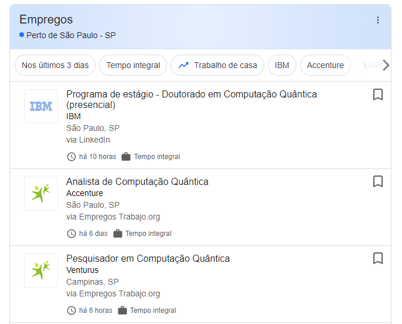

Desafios e oportunidades
A computação quântica, embora promissora, ainda está em sua infância e apresenta vários desafios. Um dos principais desafios é a necessidade de temperaturas extremamente baixas para operar os computadores quânticos. Além disso, os qubits são altamente suscetíveis a ruído do ambiente, o que pode levar a erros de cálculo.
Apesar desses desafios, a computação quântica oferece oportunidades incríveis. Ela tem o potencial de revolucionar áreas como criptografia, otimização, modelagem molecular e aprendizado de máquina. Empresas e instituições de pesquisa em todo o mundo estão investindo pesadamente na superação dos desafios da computação quântica para aproveitar essas oportunidades.
Desafios
- Manutenção de estados quânticos: Os qubits precisam ser isolados do ambiente externo para manter sua superposição e emaranhamento, o que é difícil de conseguir na prática. Isso é conhecido como problema de decoerência. A decoerência é o processo pelo qual um sistema quântico perde informações para o ambiente.
- Correção de erros quânticos: Os qubits são suscetíveis a erros devido ao ruído do ambiente. A correção de erros quânticos é uma área de pesquisa ativa. Diferentemente dos bits clássicos, os qubits podem existir em um estado de superposição, o que torna a correção de erros muito mais complexa.
- Escala: Aumentar o número de qubits em um computador quântico sem aumentar o ruído é um grande desafio. Isso é conhecido como problema de escalabilidade. Atualmente, os computadores quânticos têm um número limitado de qubits. No entanto, para resolver problemas complexos, precisamos de computadores quânticos com milhares ou até milhões de qubits.
Oportunidades
- Criptografia: A computação quântica pode levar a sistemas de criptografia mais seguros. Por exemplo, o algoritmo de Shor pode fatorar números grandes de forma eficiente, o que pode quebrar muitos sistemas de criptografia atuais. No entanto, isso também levou ao desenvolvimento de criptografia quântica, que pode ser segura contra ataques de computadores quânticos.
- Otimização: Problemas de otimização, que são difíceis de resolver em computadores clássicos, podem ser resolvidos de maneira mais eficiente em computadores quânticos. Isso pode ter aplicações em logística, planejamento de rotas, programação de horários e muitos outros campos.
- Modelagem molecular: Os computadores quânticos têm o potencial de simular moléculas e reações químicas com alta precisão. Isso pode ter aplicações em química, desenvolvimento de medicamentos, ciência dos materiais e muito mais.
- Aprendizado de máquina: A computação quântica pode acelerar certos algoritmos de aprendizado de máquina, levando a modelos mais precisos. Isso pode ter aplicações em reconhecimento de padrões, classificação, regressão e muitos outros campos.
